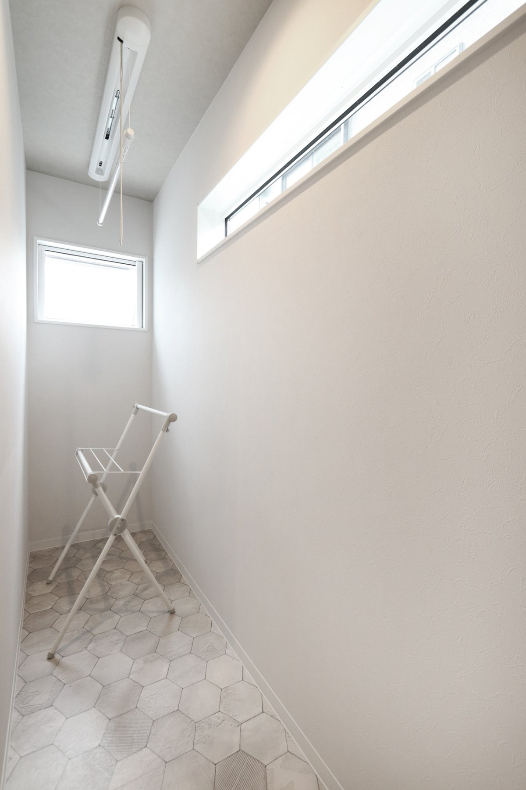

旧サイトに掲載していた取材記事より。
夫婦共に自分達の家が欲しいと思っていて、不動産を中心に1年程回っていました。
いい土地の物件は値段が高く、探している間に土地と住宅は別で購入することを考えましたね。
色々探している中でシバサンホームをネットで見つけ、施工事例もオシャレでいいなぁと思い、一度お店へうかがいました。
担当の営業さんとの相性が良く、伺った次の日に自分たちが建てたいと思っていた、平屋の見学会が開催されていて、実際に見に行きました。
それから土地を購入したのですが、小学校も遠かったり、ある程度妥協はしましたね。
分譲地みたいな、子供の同級生が沢山いるような場所が良かったのと、平屋を希望していたので、広い土地がいいなぁとは思っていました。
その辺が条件と合っていたので現在の土地を購入し、シバサンホームでどんな家が建てれるかを話し合っていきました。
シバサンホームとの出合いシバサンホームで決めたきっかけは、値段が劇的に他社と比べて安いという訳ではないと思いましたが、要望に対しての反応だったり、明確に金額などを聞かせて頂いたり打合せをしている中で、本当に分かりやすくごまかされている感じもなく、信用できた点です。
色んな営業さんがいる中、本当にいいアドバイザーさんだと思いました。
家づくりが始まりたくさん迷いましたね。
途中からフッと冷静になる時があって嫁が一時期「造作の物全部やめよう」と言い出したくらい、冷静になると値段が凄いなぁと改めて思いました。
今でももっとやれるならこだわりたかったと思うこともありますが、持っている家具との関係で、なかなか難しかったです。
いいなぁと思う間取りや部屋の雰囲気を“ピンタレスト”というサイトで探して、打合せをしていたのでスムーズに行えました。
お家づくりで悩んだ点床暖と洗濯が確実に干せる場所というのは、家づくり最中にきちんと考えていたらよかったなぁとは思いますね。
中々後からやりたいと思っても、費用が高く中々できないことも多いです。
カーポートは付けたいと思いますが、狭いのかなぁとか考えたり。
住んでみないと分からないこともありますが、迷っているなら、その時にやっている方が後からより費用も抑えられる気がしますね。
お家づくりでこだわった点本当はもっとこだわりたかった部分も沢山ありますが、費用もかかりますし、その中でも住みやすい家っていうのは絶対条件でした。廊下が欲しいのもあって、平屋にしましたね。
中でも玄関が広いのは今でも使い勝手がいいですし、LDKでは一段下げたダウンフロアにしたのですが、友達を呼ぶ際などはとってもいいですね。
そのまま座れる点や広く見えるっていうのも凄く満足していますね。
後はそうですね、間取りは凄く迷いました。
日々の家事を考えると、洗濯→室内に繋げたくて、ああでもないこうでもない。
という風になりました。
オシャレにもしたいけれど費用的に全部は出来ない、けれど一カ所だけオシャレにしても纏まらないし、とか本当に色々悩んで今の家なので、こだわってはいますね。
